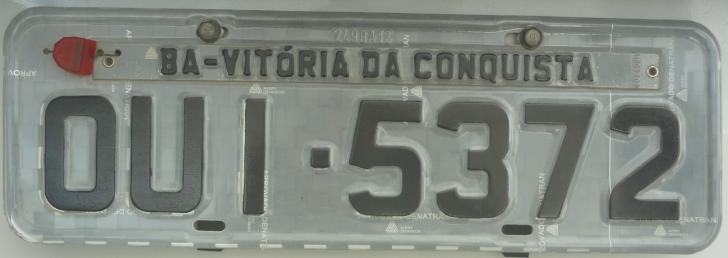
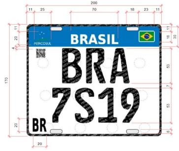
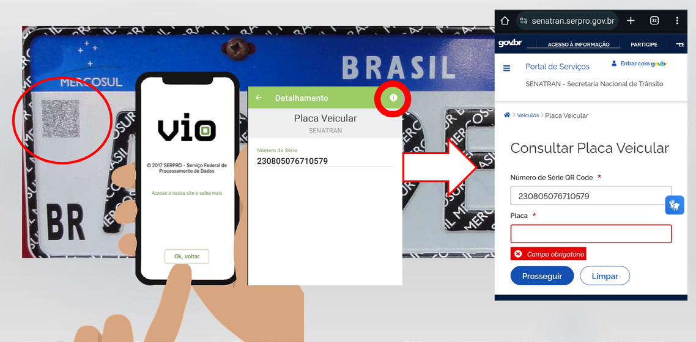

O art. 115 do CTB disciplina a identificação externa, realizada por meio de placas dianteira e traseira. Essa identificação possui caráter ostensivo e operacional, permitindo o reconhecimento imediato do veículo em circulação e a vinculação prática entre o veículo, seus registros administrativos e os caracteres gravados no chassi ou no monobloco. (p. 21)
"O veículo será identificado externamente por meio de placas dianteira e traseira, sendo esta lacrada em sua estrutura, obedecidas as especificações e modelos estabelecidos pelo Contran."
A transição da Res. nº 231/2007 para a Res. nº 969/2022 exige atenção ao marco temporal. Veículos registrados sob o sistema anterior podem circular regularmente com placas antigas, desde que preservadas suas condições de originalidade e conformidade; veículos registrados no novo sistema devem atender integralmente às exigências do padrão Mercosul. A correta interpretação da placa depende do reconhecimento do regime normativo vigente à época do registro do veículo. (p. 21)

A Resolução nº 231/2007 estabeleceu, por mais de uma década, o sistema de placas no Brasil baseado em combinações alfanuméricas formadas por três letras e quatro números, acompanhadas de tarjetas indicativas da Unidade da Federação e do município de registro do veículo. A placa dianteira e a traseira eram obrigatórias, devendo a placa traseira ser lacrada à estrutura do veículo. (p. 22)
"Art. 5º As placas serão confeccionadas por fabricantes credenciados pelos órgãos executivos de trânsito [...] §1° Será obrigatória a gravação do registro do fabricante em superfície plana da placa e da tarjeta [...]"
Especificava o código de cadastramento do fabricante da placa e da tarjeta: número de três algarismos + sigla da UF + dois últimos algarismos do ano de fabricação, gravado em alto ou baixo relevo (Figura 9). (p. 22)

Institui o Sistema de Placas de Identificação Veicular (PIV) no padrão Mercosul, alinhando o Brasil a um padrão regional. A placa deixa de exibir o município e a UF de registro, passando a apresentar apenas o nome do país e seu respectivo símbolo. (p. 23)
Alterna três letras, um número, uma letra e três números — ampliando a capacidade de séries disponíveis e a vida útil do sistema. (p. 23)
A placa deixa de ser apenas um artefato físico para tornar-se também um dispositivo de autenticação e validação, verificável eletronicamente pelas autoridades. (p. 23)
O modelo Mercosul elimina o antigo lacre físico tradicional, substituindo-o por sistemas de fixação padronizados associados a controles digitais. O foco do controle desloca-se da manipulação física para a rastreabilidade administrativa e tecnológica, deslocando parte da verificação pericial para a correlação entre placa, QR Code, cadastro nacional e identidade estrutural do veículo. (p. 23)
Apesar das mudanças, a placa continua sendo a expressão externa da identidade do veículo, juridicamente subordinada à identificação por caracteres gravados no chassi ou no monobloco. A placa não cria a identidade do veículo — apenas a representa de forma ostensiva, funcionando como elo entre o veículo em circulação, seus registros administrativos e sua identificação estrutural. (p. 24)

O QR Code inserido nas placas Mercosul constitui elemento de segurança e rastreabilidade que permite verificação rápida da procedência da placa e do vínculo com o veículo registrado. É lido pelo aplicativo VIO, ferramenta oficial para leitura e validação. (p. 24)
Dados atuais do veículo: placa vigente, últimos dígitos do chassi, UF de jurisdição, município de registro, marca e modelo, anos de fabricação e modelo, cor do veículo — permitindo verificar coerência da placa com o veículo vinculado no cadastro nacional.
Dados da estampagem da placa: número de série do QR Code, UF e município onde foi estampada, tipo da placa (dianteira ou traseira), situação administrativa (ativa, cancelada etc.), data e hora da estampagem, órgão responsável pela lacração.
Dados do fabricante: CNPJ e razão social da empresa estampadora credenciada. (p. 25)
A clonagem consiste na reprodução indevida da placa de identificação externa de um veículo legítimo, com a finalidade de atribuir a outro veículo — geralmente de mesma marca, modelo e cor semelhantes — uma identidade aparente idêntica, ocultando sua verdadeira origem. (p. 25)
Os efeitos recaem não apenas sobre o sistema de controle estatal, mas também sobre terceiros de boa-fé, cujos veículos passam a ser indevidamente vinculados a infrações, ilícitos ou crimes praticados pelo veículo clonado. (p. 26)
Exige a correlação entre elementos externos e estruturais do veículo, análise de inconsistências documentais e, especialmente nos sistemas mais recentes, verificação da integridade dos elementos de segurança e da vinculação digital da placa aos registros oficiais. (p. 26)
EMBANDQR-SIG-HOT-MAR: EMBlema Mercosul, Nome do país, BANDeira do país, QR code, SIGno distintivo BR, HOT Stamp, MARca d'água.
Q-S-P-R-I: QR Code; Serial único; Padronização de fabricantes; Rastreabilidade; Integração com sistemas informatizados.
| Aspecto | Res. 231/2007 | Res. 969/2022 (Mercosul) |
|---|---|---|
| Combinação | 3 letras + 4 números | 3 letras + 1 nº + 1 letra + 3 nºs |
| Indicação geográfica | UF + município | Apenas país (nome e símbolo) |
| Identificação da categoria | Cor do fundo da placa | Sistema controlado / QR Code |
| Lacre | Lacre físico tradicional na traseira | Elimina lacre físico; fixação padronizada + controles digitais |
| Autenticação | Física | Física + eletrônica (QR Code, VIO, Senatran) |